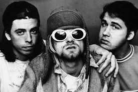
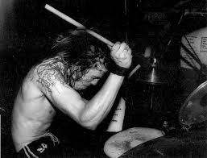
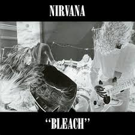

Nirvana (1987-1994) The band was founded by lead singer Kurt Cobain and Bassist Krist Novoeselic, and had 7 drummers which the drummer most memorable is Dave Grohl. Nirvana was the voice of Gen X. Nirvana found unexpected fame with their hit "Smells Like Teen Spirit" which was a play on pop and was influenced by the Pixies. They put raw emotion into music which many loved, after Nirvana ended they left such a big impact on the music industry changing the sound of rock forever.